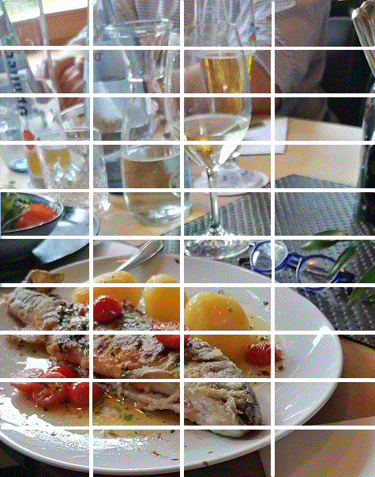

Nuremberg 2021
Spalt: repas d'anniversaire (Dimanche, 23 août 2021)
Depuis notre départ de Bayreuth trois jours ont passé. Nous avons quitté l'appartement de notre fille et sommes descendus à un hôtel très calme près de Fürth. Hier notre fille et sa famille sont rentrées de France. Aujourd'hui, dimanche, c'est un nouveau grand jour où l'on doit célébrer les 157 ans d'un grand-père (moi), d'une fille (la mienne) et d'un petit-fils (le mien), tous nés en août. Outre la famille de mon beau-frère ( 5 personnes), un couple de Freysing, des amis de longue date, grands connaisseurs de Paris et de la France, seront de la partie malgré un deuil survenu au sein de leur proche famille. Le lieu retenu par notre fille pour célébrer ces agapes est la petite ville de
Spalt
sur la rivière Rezat où l'on fabrique une bière fameuse, au coeur d'une région réputée pour la qualité de son houblon " (AOP depuis 2012).
Une fois de plus notre navigateur nous promène à travers la Franconie moyenne, à moins que ce ne soient les déviations incorrectement balisées (si, si, même en Allemagne, ça arrive!)
Cela nous permet de découvrir, avant d'arriver au but, un château qui a fière allure le "Burg Abenberg" au sommet d'une colline. Bien qu'il remonte au 11ème siècle et que le dernier conte de ce nom ait fait l'objet de vibrants éloges du trouvère Tannhäuser au 13ème siècle, la forteresse et la bourgade tombèrent en 1236 dans le giron des Hohenzollern, qui étaient alors burgraves de Nuremberg.Le château fut revendu 60 ans plus tard à l'évêque d'Eichstätt. Entre 1800 et 1875 le château tomba en ruine, jusqu'à ce qu'un marchand d'art le rachète et le restaure. Puis ce fut le tour d'un chanteur Anton Schott qui restaura la grosse tour qui porte son nom (Schottenturm) entre 1881 et 1913. Après quoi le château fut à nouveau laissé à l'abandon. En 1982-1984, la ville d'Abenberg racheta le château et en fit un centre culturel abritant en particulier un musée de la dentelle (Klöppelmuseum). La tour "Luginsland" (beffroi) de 33m est très impressionnante.
Les images ci-après témoignent amplement de la cordialité de la fête qui suivit. Le repas fut à la hauteur de la réputation du "Gasthof Blumenthal". Voici ce qu'en dit le Guide Michelin:
"Une affaire familiale aux mains de la cinquième génération et une auberge franconienne comme on les aime ! Le restaurant affiche un intérieur cosy et une superbe terrasse. Service au charme informel, atmosphère décontractée et sélection des plats régionaux simples et savoureux, avec des classiques traditionnels et de bons ingrédients."
Pour conclure cette journée mémorable le frère d'Irmy nous invite à prendre le café chez lui, dans la banlieue de Nuremberg. Dans la pénombre du séjour nous découvrons des instruments de torture destinés à entretenir la forme herculéenne (schwarzeneggerienne) de leur fils aîné.
Musée Fembohaus (mardi, 31 août 2021)
Après avoir passé la journée du lundi à faire des emplettes (découverte chez "Réwé" d'une machine à rendre les emballages consignés), nous consacrons le mardi à une visite au musée historique municipal qu'abrite la maison patricienne "Fembohaus", réchappée du désastre de 1945. Une exposition temporaire retrace les efforts déployés en faveur de l'art contemporain par Hermann Luppe, le maire de Nuremberg de 1920 à 1933 que les Nazis acculèrent à la démission.|
 |

|
Repas à Spalt - Fembohaus